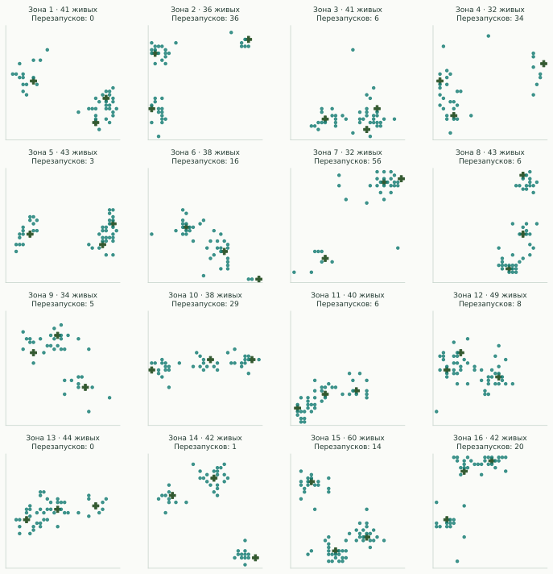
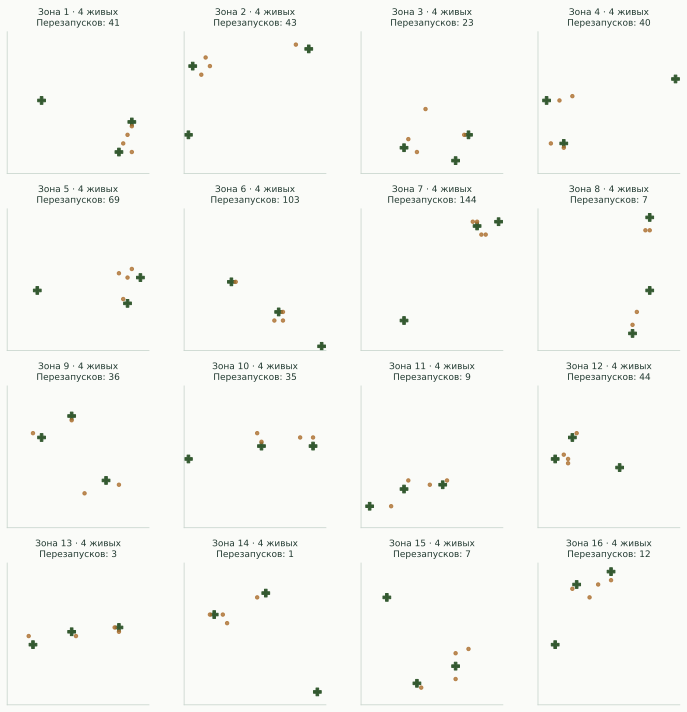
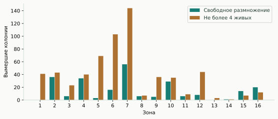
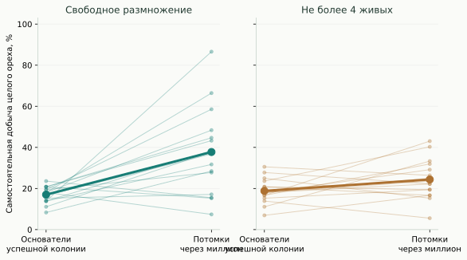
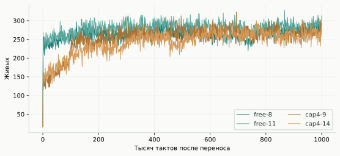
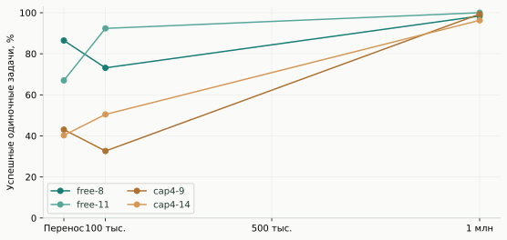
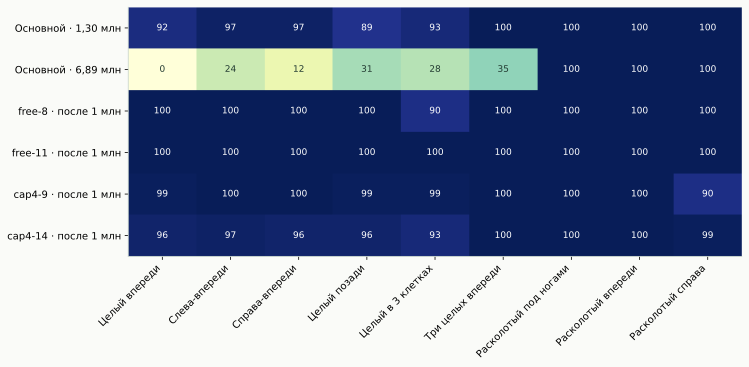

Эксперимент доведён до длинных прогонов
Удалось получить потомков, которые надёжно выполняют цепочку найти целый орех → расколоть → встать на клетку → съесть без других дикарей. Но основная популяция на 6,89 млн тактов по-прежнему выигрывает соревнование за ресурсы. Эти свойства не совпадают.
Главный результат: самостоятельную добычу еды можно вырастить с теми же 32 скрытыми нейронами. Ограничение населения до четырёх само по себе не оказалось хорошим способом ускорить её появление. А большой мир в этих прогонах улучшил самостоятельность выбранных семей.
Твой опыт — и отдельный контроль
Серия free: 16 независимых миров 32×32, в каждом три дерева и четыре случайных основателя. Размножение свободное. Серия cap4: ещё 16 миров с теми же начальными seed, но не более четырёх живых одновременно. Это отдельное изменение условий, а не скрытое ограничение первой серии.
Вымерла вся зона — немедленно добавляются четыре новых случайных мозга на случайные свободные клетки. Деревья, оставшиеся орехи и ход генератора случайных чисел мира сохраняются. Между зонами нет миграции, обмена пищей или генами. Мозаика 4×4 эквивалентна 16 отдельным аренам, а не одному связанному полю 128×128.

Показать 16 зон с потолком в четыре жителя

Миллион отсчитывался заново после каждого вымирания
В сумме потребовалось 889 заселений: 32 успешных и 857 закончившихся вымиранием. Свободная серия пережила 240 неудачных колоний, ограниченная — 617. Всего на поиск и развитие ушло 42 666 565 мировых тактов. Самая долго жившая неудачная колония вымерла после 974 013 тактов. Поэтому даже 100 тысяч тактов выживания не были надёжной гарантией.

Случайный удачный старт или эволюция?
По журналу геномов восстановлены четыре основателя последней успешной колонии каждой зоны. Они получили те же задачи, что и потомки через миллион. Это именно основатели успешных колоний: результаты всех отсеянных случайных мозгов в эту среднюю не входят.

| Серия | Основатели: целые орехи | Потомки: целые орехи | Старшее поколение, среднее | Рождений за успешный миллион, среднее |
|---|---|---|---|---|
| Свободная | 17,0% | 37,8% | 1 261 | 54 116 |
| Максимум 4 | 18,8% | 24,4% | 198 | 852 |
У свободной серии прирост среднего результата около 21 процентного пункта, у cap4 — около 6. Однако это не сравнение при одинаковом количестве поколений или мутаций. В малой группе резко меньше рождений и возможностей проверить новые мозги.
Кроме того, четыре жителя при трёх деревьях не обязательно живут сурово: еды на особь может быть много. Когда все четыре места заняты, рождение откладывается без расхода энергии. Это устраняет возможность большой толпы, но одновременно меняет отбор и ослабляет соревнование за еду. Четыре существа всё ещё могут пользоваться орехами, расколотыми друг другом.
Все 32 зоны: попытки, поколения и навыки
| Зона | Вымираний | Живых | Поколение | Основатели | Потомки |
|---|---|---|---|---|---|
| free-0 | 0 | 41 | 1147 | 23,6% | 15,5% |
| free-1 | 36 | 36 | 1275 | 19,4% | 58,6% |
| free-2 | 6 | 41 | 1280 | 13,9% | 31,7% |
| free-3 | 34 | 32 | 1337 | 18,1% | 7,4% |
| free-4 | 3 | 43 | 1251 | 15,3% | 17,1% |
| free-5 | 16 | 38 | 1443 | 20,8% | 43,3% |
| free-6 | 56 | 32 | 1274 | 8,3% | 28,5% |
| free-7 | 6 | 43 | 1236 | 20,8% | 44,7% |
| free-8 | 5 | 34 | 1208 | 13,9% | 86,6% |
| free-9 | 29 | 38 | 1455 | 11,1% | 37,7% |
| free-10 | 6 | 40 | 1268 | 19,4% | 27,8% |
| free-11 | 8 | 49 | 1264 | 18,1% | 66,4% |
| free-12 | 0 | 44 | 1081 | 16,7% | 36,8% |
| free-13 | 1 | 42 | 1299 | 18,1% | 48,4% |
| free-14 | 14 | 60 | 1147 | 13,9% | 38,4% |
| free-15 | 20 | 42 | 1212 | 20,8% | 15,3% |
| cap4-0 | 41 | 4 | 186 | 27,8% | 22,2% |
| cap4-1 | 43 | 4 | 270 | 18,1% | 22,2% |
| cap4-2 | 23 | 4 | 216 | 20,8% | 16,7% |
| cap4-3 | 40 | 4 | 211 | 18,1% | 23,6% |
| cap4-4 | 69 | 4 | 186 | 20,8% | 19,4% |
| cap4-5 | 103 | 4 | 186 | 6,9% | 16,7% |
| cap4-6 | 144 | 4 | 201 | 13,9% | 5,6% |
| cap4-7 | 7 | 4 | 182 | 16,7% | 31,9% |
| cap4-8 | 36 | 4 | 175 | 30,6% | 26,4% |
| cap4-9 | 35 | 4 | 203 | 16,7% | 43,1% |
| cap4-10 | 9 | 4 | 217 | 18,1% | 25,0% |
| cap4-11 | 44 | 4 | 168 | 11,1% | 33,3% |
| cap4-12 | 3 | 4 | 176 | 15,3% | 19,4% |
| cap4-13 | 1 | 4 | 220 | 18,1% | 29,2% |
| cap4-14 | 7 | 4 | 180 | 23,6% | 40,3% |
| cap4-15 | 12 | 4 | 195 | 25,0% | 15,3% |
Ещё миллион тактов в большом мире
Из каждой серии выбраны две зоны с наибольшей средней успешностью на задачах с целыми орехами: free-8, free-11, cap4-9, cap4-14. Это целенаправленный отбор по тесту, поэтому их высокие стартовые результаты нельзя выдавать за средние всех зон.
Каждая получила отдельный новый мир 80×80 с 18 деревьями и 16 стартовыми дикарями. Для свободных семей взяты 16 мозгов из проверенной выборки, для cap4 четыре мозга повторены по четыре раза. Дальше размножение свободное, мутации включены, никакого перезаселения. Все четыре мира прошли ещё миллион тактов.


| Семья | При переносе | 100 тыс. | 1 млн | Живых в конце |
|---|---|---|---|---|
| free-8 | 86,5% | 73,1% | 98,4% | 293 |
| free-11 | 67,0% | 92,4% | 100,0% | 313 |
| cap4-9 | 43,1% | 32,6% | 99,3% | 273 |
| cap4-14 | 40,3% | 50,5% | 96,3% | 271 |
Изменения не обязаны быть монотонными: например, у cap4-9 сначала был спад, а затем сильный рост. В этих четырёх отобранных линиях большой мир не уничтожил самостоятельность. Это важное уточнение к гипотезе «толпа обязательно делает их беспомощными поодиночке».

Самостоятельность ещё не означает победу над местными
Подселение в уже занятый мир
В копию основного мира на 6 888 459-м такте, где жили 757 местных дикарей, добавлялись 16 новичков одной семьи. Все четыре вторжения закончились гибелью новичков: cap4-14 — через 293 такта, cap4-9 — через 385, free-8 — через 505, free-11 — через 708. Возраст и энергия местных сохранены как в снимке; новичкам даны возраст 0 и энергия 120. Это проверка вторжения, не равный турнир.
Равные соревнования до и после большого мира
Чтобы убрать преимущество численности, проведены по десять дуэлей на семью: 60 против 60, пять новых карт 120×120 с 40 деревьями, на каждой обмен местами высадки. Возраст и энергия одинаковые, мутации выключены, длительность 20 тысяч тактов. Соперник — неизменная основная популяция из снимка 6,89 млн тактов. Та же проверка повторена после дополнительного миллиона развития в большом мире.
| Семья | Побед до | Побед после | Средняя доля семьи после |
|---|---|---|---|
| free-8 | 0/10 | 0/10 | 0,00% |
| free-11 | 0/10 | 0/10 | 0,21% |
| cap4-9 | 0/10 | 0/10 | 0,72% |
| cap4-14 | 0/10 | 0/10 | 0,00% |
Суммарно: 0/40 побед до и 0/40 после. Победа определяется численностью живых потомков в конце, а не обязательным полным вытеснением. Две рассадки одной карты связаны между собой; это пять пар карт на семью.
Причина конкурентного преимущества пока не установлена. Одиночный тест проверяет конкретную цепочку действий в пустом окружении. В населённом мире важны также скорость подбора готовой еды, расход энергии, перемещение и взаимодействие с чужими ударами. Мы не разделили причинный вклад этих факторов. Называть основную популяцию «просто случайной» или островных «умнее вообще» по этим данным нельзя.
Что получилось — и что менять дальше
- Самостоятельные добытчики получены и сохранены. Лучшие потомки после большого мира надёжно решают все шесть вариантов задач с целыми орехами, включая орех позади и на расстоянии.
- Один миллион тактов помог увидеть изменения, которые на 100 тысячах ещё не были ясны. Но число тактов нельзя заменять числом проверенных геномов: в cap4 их существенно меньше.
- Простого уменьшения группы недостаточно. Потолок в четыре сокращает толпу, но оставляет много еды и мало рождений. Более подходящий следующий контроль — дозировать ресурсы на особь и чередовать индивидуальную добычу с конкуренцией.
- Следует сохранять разные удачные стратегии. Основная линия сильнее в конкуренции, островные потомки лучше решают часть индивидуальных задач. Для универсальности нужно проверять обе способности, а не выбирать победителя по одному показателю.
Методика, данные и сохранения
- Базовые правила: удар 3×1 вперёд, есть только стоя на расколотом орехе; энергия ореха 60, базовый расход 0,25, дополнительная цена удара 2, плодоношение 0,10, максимальный возраст 10 000, мутация ±0,52 по 16 выбранным параметрам при рождении. Сеть 607→32→6, без памяти и обучения в течение жизни.
- В каждой серии 16 независимых вычисляемых зон. Начальные seed 61000–61015, отдельные генераторы новых поселенцев 82000–82015. В двух сериях одинаковые начальные seed, но при расхождении действий расход случайных чисел и дальнейшие события различаются.
- Критерий завершения поиска: миллион непрерывных тактов после последнего вымирания. Суммарное вычислительное время разных зон различается. Неудачные колонии сохранены в журналах, а не скрыты из истории.
- Одиночные тесты: поле 16×16 без деревьев и соседей, энергия 120, возраст 0, максимум 300 тактов, три seed. Шесть задач с целыми орехами и три с расколотыми. Успех — съесть хотя бы один. У награды за еду нулевая энергия, потому что испытание сразу заканчивается после успеха; рождения исключены. На рисунках «самостоятельность» означает среднее по шести задачам с целыми орехами, а не общий интеллект.
- Основатели проверены все четыре; потомки — случайные до 24 живых из каждой популяции. В ограниченных зонах проверены все четыре. По три повтора одного мозга не являются тремя независимыми эволюциями. Средние по сериям одинаково взвешивают каждую из 16 зон.
- Семьи для переноса выбраны по этим же тестам. Проверки после переноса используют тот же набор задач, поэтому это не независимый тест обобщения на совершенно новые задачи. На каждую выбранную семью выполнен один длинный прогон в большом мире; этого недостаточно для универсальных причинных выводов о плотности.
- Более крупный новый мир имеет примерно ту же плотность деревьев, что основной. Равные дуэли стартуют возле деревьев; они не проверяют поиск еды из далёкой пустыни. Конкуренция жителей и новичков в занятом мире намеренно неравная.
- Выполнено 42 666 565 тактов поиска, 4 001 891 тактов переносов и 1 600 000 тактов дуэлей. Одиночных испытаний — 25 488. Счётчики мировых тактов не равны числу решений отдельных дикарей.
- 18 автоматических тестов проверили ядро и новый исследовательский лимит населения, включая отсутствие платы за отложенное рождение и точное совпадение обычного пути с неограниченным режимом. Отдельно проверены журналы cap4: превышений четырёх живых нет.
Основной мир не изменён: по-прежнему сохранён и стоит на паузе на такте 6 888 459. Его контрольная сумма сверена с резервной копией. Все 32 островных состояния, четыре больших мира после дополнительного миллиона, промежуточные снимки и журналы геномов хранятся отдельно. Полные многогигабайтные архивы локальные; на сайте доступны компактные результаты и код.